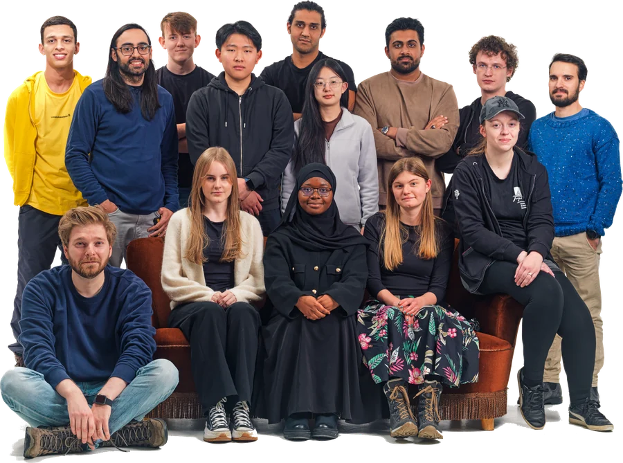

TEP students · Linnaeus University
Department of Computer Science and Media Technology · Linnaeus University
Paid student roles that combine teaching, research and outreach
Inspired by the Brazilian PET (Programa de Educação Tutorial), where tutored student groups combine teaching, research and outreach, and adapted to the Swedish university context.
TeachingTeaching assistanceLabs and course support
ResearchResearch supportAnalysis and prototyping
OutreachCommunity outreachSchools and festivals